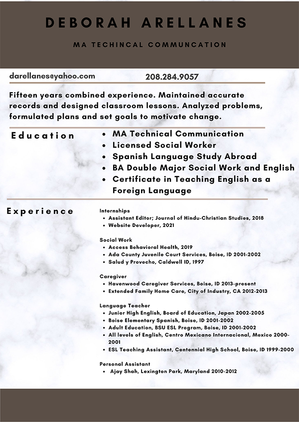

My Story
I completed my BA double major in English/Linguistics and Social Work in 2002. Wanting to
expand my career options, I enrolled in the MATC (Master of Arts Technical Communication) program in 2015.
Every course, in a unique way, taught me that good technical communication equates to deliverables that are
easily read and understood. The homework has entailed, among other things, countless hours of writing and
editing. Each assignment improved my writing skills. I can now more quickly create effective documents because
I can recognize lack of flow, analyze user experience, and apply design principles. My portfolio demostrates
a wide array of topics and applications.
Academics
In my first class, 512 Technical Rhetoric and Applications, we were assigned to
write a 5-page proposal and then present it on PowerPoint. I chose solar energy. At that time, I had only
read one book about it, Danny Kennedy’s Rooftop Revolution: How solar Power can save our Economy—and Our
Planet—from Dirty Energy. This assignment gave me the chance to research the field through books,
websites, documentaries and videos, and interview people in the field. I learned that there are a
tremendous amount of options, as well as high-stakes obstacles to overcome, huge benefits and drawbacks,
and they affect everyone, and the future of the world, economically and politically—both negatively and
positively. Learning about such a large assortment of issues and then figuring out how to include them all
in one paper and PowerPoint presentation, pushed me to think more in-depthly about how to present
imformation. I wanted an all-inclusive proposal—not missing any known aspect—to ensure it would hold up in a
professional setting. I spent hours organizing, writing, and re-writing.
My second class was 518 Writing Software Documentation. I was introduced to HTML
about 10 years ago but didn't spend a lot of time learning it. In 518 I was reintroduced to it, and coded
my first multipage website about how to repair VWs. I didn't have a strong mechanical background but gained
collaborative experience working with a mechanic; and then organized, wrote, and edited, while incorporating
user experience and design principles. For my internship, I coded a second website in Adobe DreamWeaver.
For me, the backbone of the MATC program was 513 Technical Editing. Although I
didn’t take it until my 4th semester, I wonder if it would have made my previous semesters easier because I
learned so much about the intricacies of writing. Every day we were editing. Some were poorly written sentences with an
easy-fix. Others full of big words that had to be condensed down to plain language. I learned about
stress and emphasis, word placement, new and old info, eliminating redundancies, using words that
give life to writing, and deleting words and phrases that create vagueness. The extensive level of
editing made my future classes and the whole writing process easier. Although, no matter how much I edit,
every time I reread my writing, I wonder how I could have ever thought it flowed, in the first place.
In 511 Rhetorical Theory for Workplace Writers, we read journal articles every
week. I began looking at writing from the perspective of analyzing how the author organized the information.
On one assignment, I was stuck in writers-block-mode and struggling with the concluding paragraph. So, I
put it down and went to skim another assigned journal article. I began reading through it and
bam—an aha moment! The sentence read “…every typeface has rhetoric…,” (along with a
lengthy discussion). I expanded on that concept for the conclusion I was stuck on, and —appropriately cited. That
aha moment clarified to me how much influence a good writer really can have. If a writer understands design,
format, and writes and edits well—indeed some persuasive media can be produced!
Most every class required a presentation. That helped me learn to carefully choose
wording. I didn't want to stand there and bore everybody. I learned to create effective PowerPoint
presentations by spending hours making sure each explanation flowed well to the next and that slides
were relevant and interesting.
Ready to Move Forward
Throughout the program I have developed a far more organized approach. I consider typeface,
design, colors, as well as effective plain language. My highest priority is how easily the reader will
absorb the information. I think through how and why a document will be used and what I can do to make that a
positive experience. Thinking back to my first solar energy proposal experience in 512, I see tremendous
growth.
